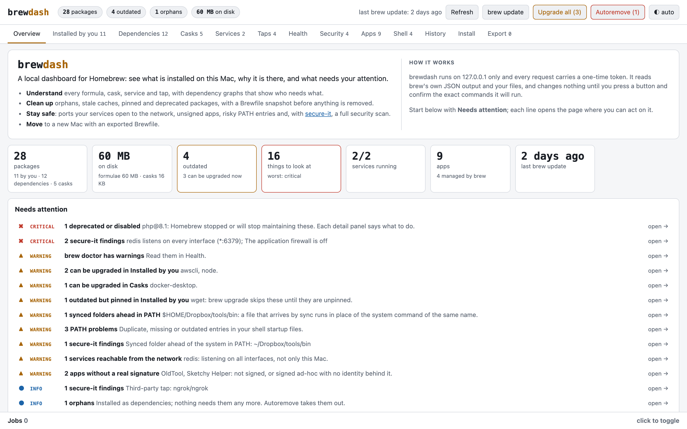

brew list, explained.
brewdash is a dashboard for Homebrew that runs on your Mac. It shows why each package is there, what is out of date or broken, and what needs your attention. Then it fixes it, with every command shown to you before it runs.
brew trust lemiorhan/brewdash && brew install --cask lemiorhan/brewdash/brewdash
Paste it in Terminal. The first command lets Homebrew load casks from brewdash's own tap. The second puts brewdash in your Applications folder.
Or download the app, unzip it and move brewdash.app to your Applications folder.
- awscli2.19.1 is out, you have 2.18.0
- gityou installed it
- icu4c@74nothing needs it any more
- openssl@37 packages need it
- pcre2came with git and ripgrep
- php@8.1deprecated, Homebrew no longer supports it
- redislistens on every network interface
- wgetpinned, so brew upgrade skips 1.25.0
Everything brew knows, on one page
brewdash reads Homebrew's own output and your shell files. Pick a view to see it.

Totals, disk use, records and charts, and a Needs attention list ordered worst first. Each line opens the page where you can act on it.
Nothing changes until you confirm it
Looking around is free. brewdash runs a brew command only when you press a button and agree to what it shows you.
-
Only your Mac can reach it
Other computers cannot connect to brewdash, and the web pages you visit cannot send it commands.
-
You see every command first
Each action opens a dialog with the exact brew commands it will run. If a removal would break other packages, the dialog names them.
-
A removal can be undone
Before every uninstall brewdash saves a Brewfile snapshot.
brew bundle install --file=<snapshot>puts it all back.
Opens like any other Mac app
brewdash.app is signed by its developer and notarized by Apple. It opens in its own window, with a menu bar and a Dock icon.
-
Install
Paste the command above in Terminal, or download the app. If an older brewdash.app is already there, add --force to brew install. It updates itself; pick stable or beta in its Settings.
-
Open
Start brewdash from Launchpad, Spotlight or the Dock. Click its Dock icon to bring the dashboard back.
-
Quit
Press ⌘ Q to quit brewdash.
The details
What you need
macOS, Homebrew and Python 3.9 or newer. The python3 that comes with the Xcode Command Line Tools is enough; brewdash needs no other packages.
Removing it
This deletes the app. Your settings and Brewfile snapshots stay in ~/.local/state/brewdash; add --zap to delete them too. A downloaded app goes to the Trash like any other.
brew uninstall --cask brewdash
Try it without your own setup
The demo serves made-up packages and only prints the commands it would run.
git clone https://github.com/lemiorhan/brewdash.git cd brewdash python3 scripts/demo.py
Run it from the source
brewdash is one Python file and a small web page, under the Apache License 2.0.
python3 brewdash.py # opens your browser python3 brewdash.py --port 8765 # on a fixed port